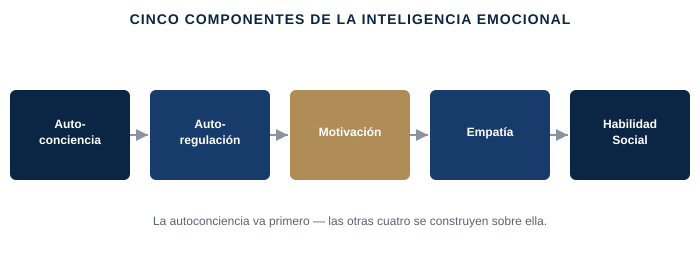

Tu equipo no recuerda tu mejor decisión tanto como recuerda cómo estabas cuando la tomaste. Lo que separa a los líderes que siguen siendo eficaces bajo presión de los que no lo son casi nunca es el CI — es lo que haces con lo que sientes, en el momento en que cuenta.
Mantener la cabeza clara en la sala donde una decisión sale mal; dar feedback difícil sin activar la defensiva de la otra persona; leer lo que de verdad necesita una negociación tensa o un equipo en silencio antes de hablar.
La investigación del psicólogo Daniel Goleman popularizó la inteligencia emocional como una habilidad de liderazgo en sí misma, construida sobre cinco capacidades: autoconciencia (saber qué sientes y por qué), autorregulación (elegir tu respuesta en vez de dejar que la emoción te dirija), motivación (canalizar la emoción hacia un objetivo en lugar de reaccionar desde ella), empatía (leer lo que sienten los demás, aunque no lo digan) y habilidad social (usar todo lo anterior para mover a un grupo, no solo sobrevivirlo). Nada de esto significa suprimir la emoción o fingir una calma que no sientes — los líderes que de verdad sostienen una sala bajo presión son los que detectan la señal emocional lo bastante pronto como para elegir qué hacer con ella, en vez de descubrirla después en lo que dijeron.

Adaptación simplificada y con fines formativos de los cinco componentes de la inteligencia emocional de Daniel Goleman.
Qué separa reaccionar de responder → los cinco componentes de Goleman, aplicados a tu próxima conversación difícil.
Vídeo extendido (15-25 min), un PDF framework/checklist propio, un workbook de aplicación práctica, y un resumen curado de Inteligencia Emocional de Daniel Goleman y Agilidad Emocional de Susan David.
Gratuito si eres cliente de coaching activo · El acceso por suscripción para el público general se abrirá próximamente.